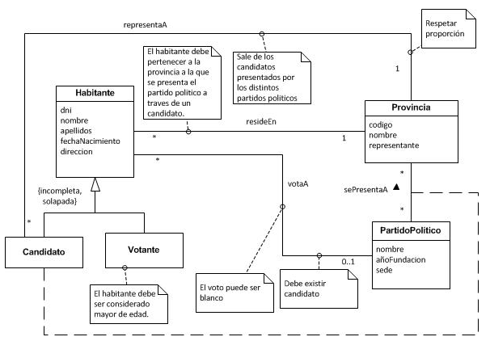
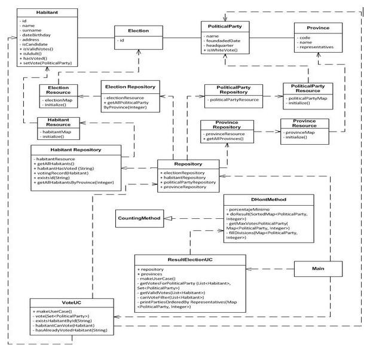

Gestión de votos en República de Pitoria
Descripción
Este es un proyecto desarrollado en mi tiempo libre utilizando los conocimientos adquiridos en la asignatura de Diseño y Pruebas. Para su desarrollo emplee el framework Spring IoC, que se encarga de las instancias de los elementos cumpliendo así con el principio de Hollywood (o también conocido como de inversión del control).
El proyecto simula unas elecciones en la República ficticia de Pitoria y aplica el método D'Hont para obtener el resultado de las elecciones. No obstante, la aplicación está diseñada para implementar otro método de recuento de votos y poder ser aplicado.
Está desarrollado en Java y cumple varios patrones de diseño, como el de inversión del control mencionado anteriormente y el patrón estrategia, ya que se pretende hacer intercambiables los algoritmos de recuento de votos. A continuación se muestran el modelo de análisis y el modelo de diseño respectivamente.
 